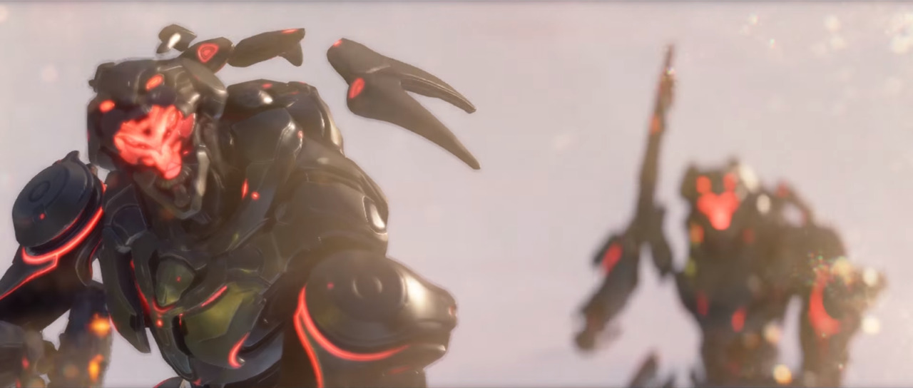
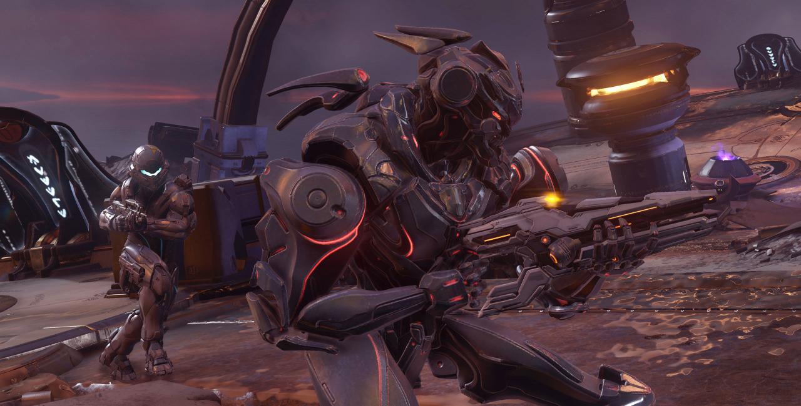
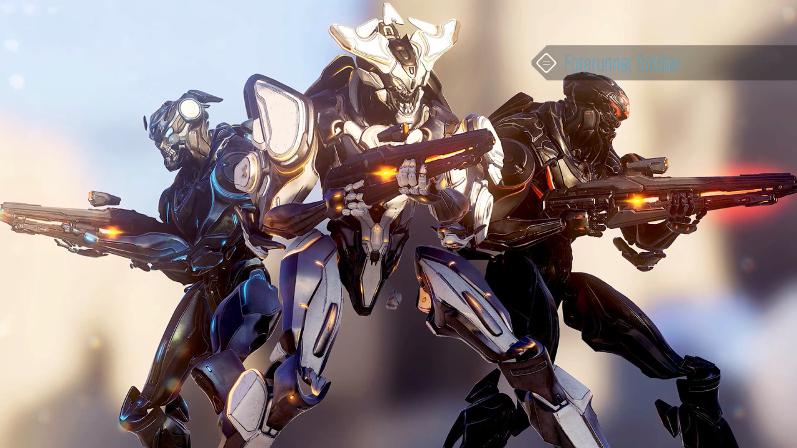

Halo 5: Guardians | PROMETHEAN SOLDIER
Something was emerging from each portal, and although it had the genera shape of a biped, even a human, it was clearly not anything of the sort. Composed almost entirely of a metallic alloy-like substance, these robotic-looking constructs had the same posture and frame as a human, even down to the orientation of their plated musculature. Nevertheless, they clearly displayed the Forerunner design aesthetics, with eccentric bevels, angular apertures, and floating accoutrements; their bodies were lithe yet still formidably armoured. [Halo: Hunters in the Dark]